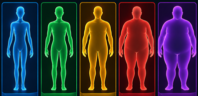

Descubra se o seu peso está adequado para a sua altura
Cuidar da sua saúde é um ato de amor próprio!
Seus dados
Preencha as informações abaixo para calcular seu IMC
Masculino
Feminino
Seu IMC
00,00

O que é o IMC?
O Índice de Massa Corporal (IMC) é uma medida simples que relaciona o peso e altura,
ajudando a identificar se você está dentro da faixa de peso saudável para a sua altura